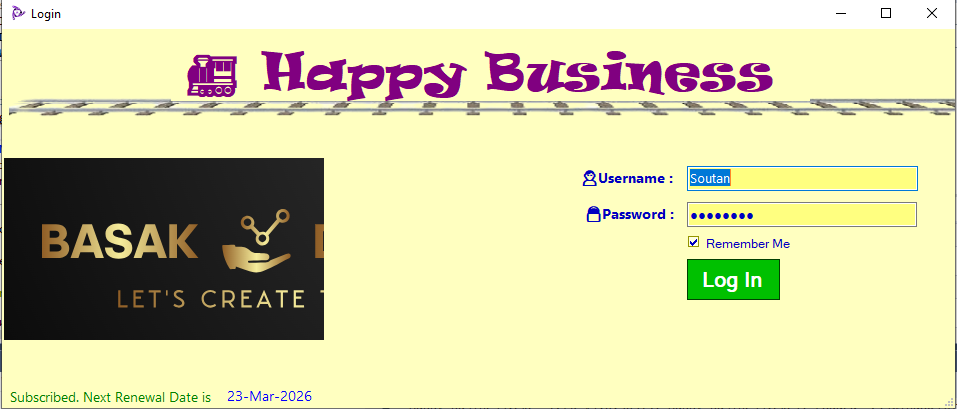
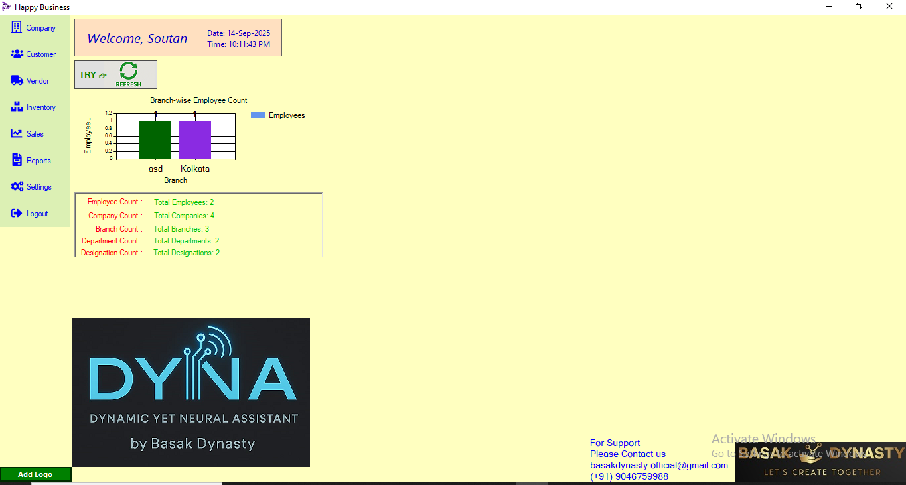
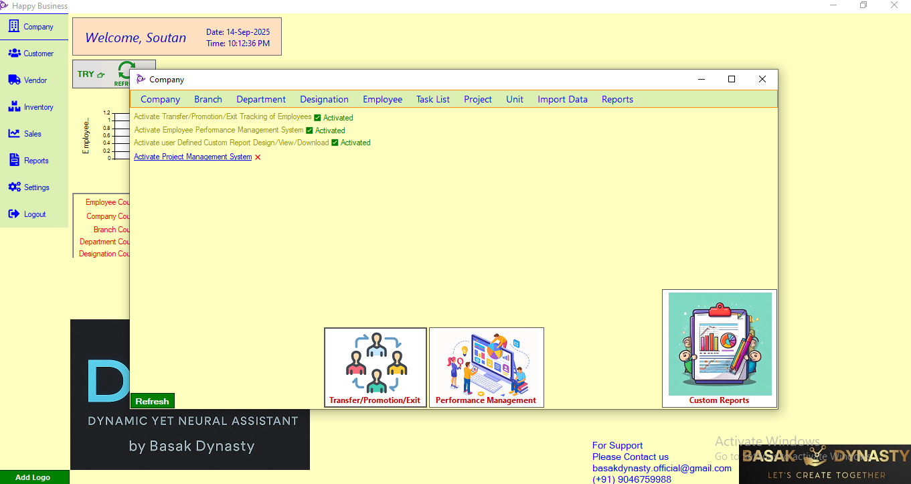

Happy Business CRM
A customer relationship management (CRM) system developed to help small and medium businesses manage leads, clients, sales pipelines, and support tickets in a streamlined way.
Features
- Lead and client management
- Sales pipeline with deal tracking
- Task assignments and reminders
- Customer support ticketing
- Analytics dashboard with KPIs
Screenshots



Technologies Used
VB.NET, MS SQL Server, Windows Forms, Crystal Reports, File I/O, Excel Import and Export, SMTP (Previous version created in Python and Sqlite)
Challenges & Learnings
Faced challenges in designing scalable database relationships and ensuring smooth performance with growing client records. Learned database optimization, transaction management, and how to implement role-based access control effectively.